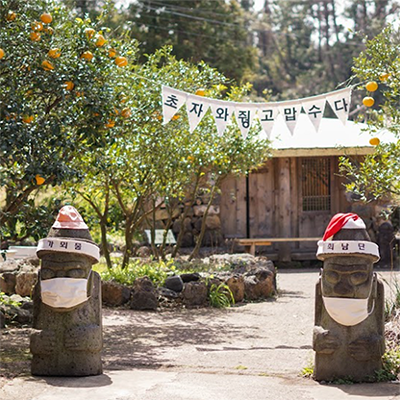
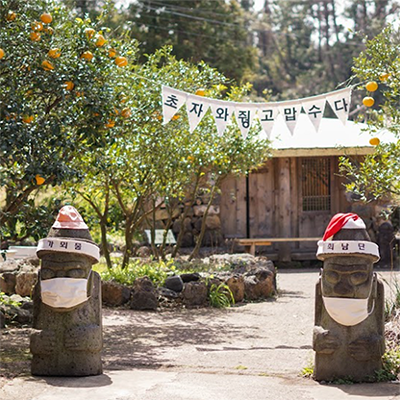
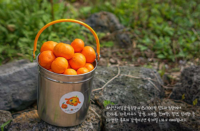

최남단 체험 감귤 농장

[일시]매일09:00~1800중
장소 최남단체험감귤농장[서귀포시 남위남성로 164]
[대상]남녀노소 누구나
[인원]1일 200명
[참가비]1인 10,500원(정가 15,000원 30%할인가)
*기획전 할인 기간은 10월까지이며 진행 상황에 따라 조기 종료될 수 있습니다.
 [일시]매일09:00~1800중 장소 최남단체험감귤농장[서귀포시 남위남성로 164] [대상]남녀노소 누구나 [인원]1일 200명 [참가비]1인 10,500원(정가 15,000원 30%할인가) *기획전 할인 기간은 10월까지이며 진행 상황에 따라 조기 종료될 수 있습니다.최남단 체험 감귤 농장
365일 열려있는 최남단 체험 감귤농장
최남단체험감귤농장은 연중 무휴로 한라봉,청견,세미놀 또는 카라향 1kg 따기 체험을 전공하고 있습니다.
제주도의 귤을 직접 수확하는 체험을 통해 제주의 자연과 교감을 나누며 힐링을 얻어가시길 바랍니다.

감귤따기 실제체험
청정 제주의 제철 감귤따기 체험을 즐겨보세요!
감귤풍종 다양화를 이룬 총면적 2만평 부지의 감귤농장에서 1년 365일 언제든 제철 제주 감귤을 딸 수 있습니다.
우천시에도 비가림하우스에서 수확이 가능하며, 최남단의 감귤은 당도가 높아 그 맛도 으뜸입니다.(4~6월:한라봉 첨견,세미놀,카라향 수확가능)


*한사람당 1kg까지 수확가능